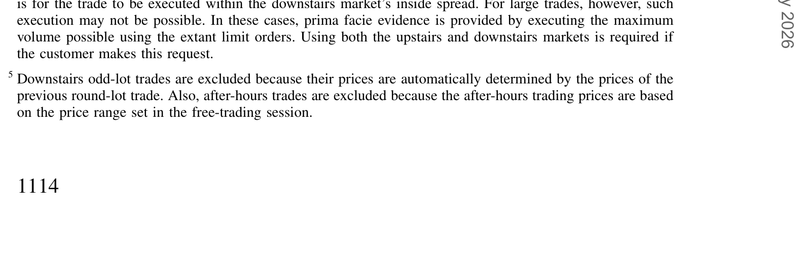
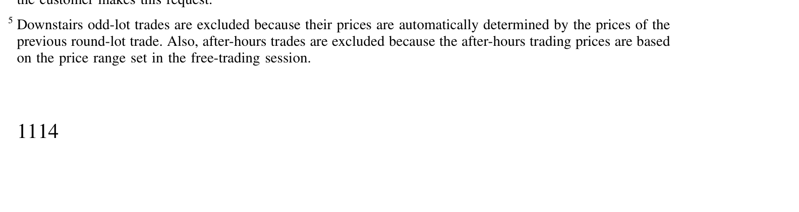
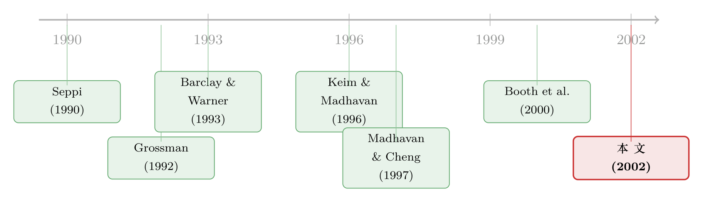

同一只股票，楼上楼下两个价：负责定价的，其实只有楼下那一个
本文读的是 Booth, Lin, Martikainen & Tse (2002, Review of Financial Studies)：用赫尔辛基交易所（HSE）的逐笔数据，他们发现「楼上市场」（经纪商当面议价的场外交易）的交易信息含量更低、价格冲击更小——卖方发起的楼下交易永久价格冲击约 64 个基点，楼上只有约 11 个基点。但真正的点睛之笔在最后：楼上之所以能给客户更好的价，恰恰是因为它「搭便车」用了楼下匿名市场发现出来的价格。负责定价的，始终是楼下。
1 引言：一只股票，为什么要有两个交易场所？
先想象一个再普通不过的场景。你手上有一大笔某只股票要卖——比如占了这只股票日均成交量好几成的量。你打电话给经纪商，问：怎么卖最划算？
经纪商会给你两个选择。
第一个，把单子直接丢到交易所的电子撮合系统里，匿名挂出去，让市场自动成交。这叫楼下市场（downstairs market）——交易所的电子撮合，或者它的传统化身：交易大厅。这里没有人知道是谁在买、谁在卖，价格由限价订单簿自动决定。痛快、匿名，但你心里有点发怵：这么大一笔单子砸下去，价格会不会被你自己推得稀里哗啦？
第二个，让经纪商「在楼上帮你处理」。这叫楼上市场（upstairs market）——经纪行办公室里，经纪商替你打电话、找对手方、当面议价。慢一点，不匿名，但经纪商也许能替你找到一个正好想接这一大笔的买家，从而避开把价格砸穿的尴尬。
于是一个自然的问题浮出来了：既然有了高效、匿名、自动撮合的电子交易所，为什么还需要一个靠人打电话、当面谈价的「楼上」？ 它到底贵在哪、好在哪？是真的替客户省了钱，还是只是一个历史遗留的、迟早要被电子化淘汰的中间环节？
这个问题本身就是一篇博客的好题目。关于「电子交易所到底还需不需要楼上市场」，可以顺带参见《电子交易所，还需要一个「楼上」吗？》；本文则是从价格冲击与价格发现的角度，给同一个问题提供了一份极干净的经验证据。
2 两种「定价机器」：楼上靠人，楼下靠机器
要回答上面的问题，得先看清这两个市场到底「不一样」在哪。
赫尔辛基交易所（Helsinki Stock Exchange, HSE）在 1989 年上线、1990 年 4 月全面运行了一套自动交易与信息系统，叫 HETI。它和多伦多、巴黎、布鲁塞尔、巴塞罗那等交易所采用的连续自动交易系统（CATS）大同小异：没有指定做市商，限价订单通过授权经纪行报进系统，在每天上午 10 点到下午 4 点的连续交易时段里匿名、连续地自动撮合。这就是楼下。
楼上呢？同样这批授权经纪行（1995 年底共 20 家），可以在自己办公室里替客户撮合订单，然后再「及时」把成交报回 HETI。论文里有一段对楼上运作的描写特别传神：经纪商接到一个大单（几乎总是通过电话），通常不会立刻丢进 HETI，而是先告诉同一个交易室里的其他经纪——「我这儿来了个大单」——大家或主动在自己客户里找对手方，或被动等买家上门，争取把这笔交易在「自家屋里」做掉。
为什么要这么藏着掖着？论文给了两个理由，都很关键：
- 怕砸价。 一个大单直接进 HETI，会造成订单失衡（order imbalance），在楼下砸出一个大大的价格冲击。
- 怕被抢跑。 把大单消息透露给竞争对手，等于告诉对手方的客户「这里有大货」，自己反而暴露在抢先交易（front running）的风险下。
所以楼上和楼下，是两种截然不同的「定价机器」：楼下是一台匿名、自动的撮合机器，价格由订单簿吐出来；楼上是一群会打电话、会议价、会看人下菜的经纪人。这就引出了本文真正要问的那一句话：
楼上这套「搜寻—议价」机制，到底产出了和楼下匿名撮合不一样的价格吗？如果不一样，是更好，还是更坏？
3 数据：20 只最活跃的芬兰股票，三年逐笔
赫尔辛基是个小市场。1995 年底 HSE 上市公司 73 家，市值 1910 亿芬兰马克（FIM）。正因为它薄，本文挑了流动性最好的一批——HEX-20 指数成份股（按马克成交额排序的 20 只最活跃股票），样本期 1993 年 1 月到 1995 年 12 月，且这 20 只在整个样本期内没换过。样本只含连续交易时段里的楼下整手交易和楼上交易（剔除了零股和盘后，因为它们的价格是机械地由前一笔决定的）。
表 1 是这 20 只股票的描述性统计。平均成交价从 FIM 8.96 到 520.29 不等，均值 FIM 130.76、中位数 94.18；平均每只股票每天约 23 笔交易，其中约 22% 发生在楼上。但请注意一个对比强烈的数字：虽然楼上只占了约 22% 的笔数，却占了约 51% 的成交量——因为楼上交易的平均规模（6,914 股）是楼下（2,072 股）的 3.3 倍。

Table 1: contains summary statistics of the 20 sample firms. The average
一句话：楼上是大单的去处，楼下是散单的战场。 这和 Madhavan & Cheng (1997) 在美国市场的发现是一致的——楼上交易通常比楼下大。
4 识别：把一笔交易的价格冲击拆成两半
现在到了全文方法论的核心。要判断「楼上是不是给了客户更好的价」，本文用的是微观结构里很经典的价格冲击分解（price impact analysis）[见 Holthausen, Leftwich & Mayers (1987, 1990) 与 Keim & Madhavan (1996)]。
它的直觉是这样的。一笔交易发生后，价格会动；但这个「动」可以拆成两种性质完全不同的成分：
- 永久价格冲击（permanent price effect）：交易传递了新信息，导致股票价值发生了不会回头的重估。它反映的是这笔交易里的「信息含量」。
- 暂时价格冲击（temporary price effect）：交易之后价格出现的反转（reversal）。它通常来自买卖价差——是给流动性提供者的补偿，是一种过眼云烟的暂时效应。
二者加起来，就是总价格冲击（total price effect）：成交价相对于交易前价格的全部「价格让步（price concession）」，也就是把这笔单子塞进市场需要付出的代价。
怎么落到数据上？由于 HSE 数据库既不标记一笔交易是买方还是卖方发起的，也没有盘中买卖报价，本文用报价升降规则（tick rule）来分类：成交价低于前一笔（下跌 tick, downtick）记为卖方发起，高于前一笔（上涨 tick, uptick）记为买方发起，等于前一笔（zero-tick）则剔除。Lee & Ready (1991) 与 Finucane (2000) 都论证过，只要忽略 zero-tick，tick 规则是相当准确的。
接下来是符号。记 \(p_t\)、\(p_{t-j}\)、\(p_{t+s}\) 分别为时刻 \(t\) 这笔交易、它之前第 \(j\) 笔、之后第 \(s\) 笔交易成交价的对数。论文假设 \(p_{t-j}\) 是交易前的均衡价、\(p_{t+s}\) 是交易后的均衡价。于是三个价格冲击被定义为：
$$\text{permanent} = p_{t+s} - p_{t-j}$$
$$\text{temporary} = p_t - p_{t+s}$$
$$\text{total} = p_t - p_{t-j}$$
三者之间有一个干净的恒等式——总冲击恰好就是永久冲击与暂时冲击之和。这就是本文最核心的那一个式子，我把它拆开标注如下：
至于 \(j\) 和 \(s\) 取多少？本文做了逐笔分析后选了 \(j=5\)、\(s=3\)——因为平均而言，一笔交易前 5 笔、后 3 笔之外，就观察不到显著的价格移动了（按样本股票任意两笔连续盘中交易平均间隔 16 分钟算，5 笔约 80 分钟、3 笔约 48 分钟）。
把这套尺子架好，Seppi (1990) 的理论就有了可检验的预言：既然未受信息驱动的交易者（uninformed traders）更倾向于上楼当面议价，那么楼上交易的信息含量更低、永久冲击更小；而楼上的搜寻—议价机制要付出诱使对手方成交的代价，所以暂时冲击应当更大；但只要逆向选择成本的下降盖过了流动性成本的上升，总冲击仍应更小——也就是说，无信息的交易者上楼是划算的。Grossman (1992) 从「信息仓库」的角度也得到同一个推论：楼上经纪商掌握着客户们没说出口的需求，因此能给上楼的客户一个比楼下更好的价。
5 主要结果：楼上确实「更便宜」，而且大单全在楼上
先看交易都跑到哪去了。表 2 按交易规模（每只股票自身的 5 个分位组）、市场类型和经纪商身份，给出了交易分布。

Table 2: provides a detailed distribution of trades by markka volume and
两个数字最扎眼：
- 最大的那一组交易（≥95 分位），约
85%的马克成交量（83%的股数）走的是楼上； - 最小的那一组（<50 分位），只有约
15%的马克成交量（17%的股数）走楼上。
也就是说，大单上楼、小单下楼，泾渭分明。而 85% 这个数字，比美国市场高得离谱——Madhavan & Cheng (1997) 报告，道指 30 只股票里超过 50,000 股的大宗交易，只有约 28% 在楼上撮合；Hasbrouck, Sofianos & Sosebee (1993) 也只报了 NYSE 全部上市股票大宗成交量的约 27% 走楼上。为什么芬兰这么高？因为 HSE 是个薄市场，大单在楼下砸出的冲击更让人害怕，于是楼上承担了更重的「为大单供给流动性」的角色。
表 2 还藏着两个有意思的细节。其一，中等规模（50–75 分位）的交易最不愿意上楼——这正好印证了 Barclay & Warner (1993) 的「潜行交易（stealth trading）」假说：知情交易者偏爱中等规模的单子，配上 Seppi (1990) 那句「知情交易者倾向于在楼下交易」。其二，楼上交易高度内部化（internalized）——同一家经纪行同时代表买卖双方；即便在最大的交易组里，不同经纪行之间的跨经纪（cross-broker）成交也只占约 5%。这与 Grossman (1992) 把楼上经纪商视为客户未表达需求之「信息仓库」的设想一致，也可能是因为经纪商不愿联系对手而暴露于抢跑，或干脆在以做市商身份吃下买卖价差。
关于「为什么大单反而能拿到折扣、关系如何被定价」，可参见《为什么大单反而能拿到折扣？——把伦敦交易所的「关系」算成一笔账》，那是同一条研究脉络在伦敦市场的延伸。
接着是全文最硬的证据——价格冲击的对比。结论非常清晰：
- 对下跌 tick（卖方发起）：楼下交易的平均永久冲击约
64个基点，楼上只有约11个基点； - 对上涨 tick（买方发起）：楼下约
62个基点，楼上约15个基点。
楼下交易的永久冲击量级显著大于楼上，而且这个结论在全样本以及全部五个规模组里都成立。换句话说，Seppi 和 Grossman 的预言被数据漂亮地接住了：楼上交易确实信息含量更低、价格冲击更小，无信息的流动性交易者上楼是划算的。
故事讲到这儿，似乎可以收尾了：楼上市场有它独到的经济价值，它能更好地为无信息的流动性单子定价。可是——
6 反转：楼上的「好」，是从楼下借来的
但真正关键的一步，藏在论文的第三个贡献里。
如果楼上能给出更好的价，那么楼上经纪商凭什么知道「更好的价」是多少？他报给客户的那个价，参照系是什么？
本文用共同因子自回归（common factor autoregression）这一框架来回答——它显式承认：同一只股票的楼上价与楼下价，共享同一个基本面（fundamental），因此可以问：这个共同的「真值」，主要是在哪个市场被发现的？谁在主导价格发现（price discovery），谁在跟随？
结论是一记漂亮的反转：
楼上无信息交易能带来好处，取决于价格发现发生在楼下市场。经纪商倾向于把楼下价格当作给楼上交易定价的基准；反过来，楼上价格对楼下的定价几乎没有影响。
把这两层叠起来看，整篇论文的「一个核心」就立住了：
楼上市场看起来更便宜、冲击更小，但这份「便宜」并不是它自己凭空创造的。真正在做价格发现、在生产那个「真值」的，是楼下那台匿名的电子撮合机器。 楼上经纪商不过是拿楼下发现出来的价格当锚，再凭着「我知道哪些客户其实只是想调仓、并没有内幕消息」这一信息优势，替这些无信息的大单匹配对手、避开砸价。楼上的价值是真实的（它确实降低了无信息交易者的成本），但它在定价意义上是寄生的——离开了楼下的价格发现，楼上就没有了那个用来「打折」的基准。
这就回答了开头那个问题：电子交易所还需不需要楼上？需要——但前提是，那台匿名的楼下机器必须还在认真地发现价格。
7 文献脉络
这条线的起点，是两篇纯理论。Seppi (1990) 在一个带不对称信息的均衡区块交易模型里提出：无信息的大宗交易者会去楼上直接议价，因为楼上的逆向选择成本更低；而知情交易者则被留在楼下。Grossman (1992) 紧接着补上另一个机制——楼上经纪商是客户「未表达需求」的信息仓库，因此能给客户比楼下更好的价。这两篇为「楼上为什么存在」给出了两套互补的逻辑。

接着，一个自然的问题是：这些理论预言，在数据里站得住吗？Keim & Madhavan (1996) 系统地测量了楼上大宗交易的价格冲击；Madhavan & Cheng (1997) 则用 NYSE 的合并审计追踪数据（CAUD）和一个间接算法去区分楼上楼下，分析道指股票的区块交易，发现超过约 20,000 股的订单，楼上的预期价格冲击小于楼下——这是把 Seppi/Grossman 的预言第一次系统地搬到经验数据上的关键一步。但这类研究受制于一个硬伤：美国数据里，楼上、楼下的归类只能间接推断。
本文（Booth, Lin, Martikainen & Tse, 2002）正是站在这个缺口上。HSE 的制度安排要求每一笔交易都必须报告它源自哪个市场，而且数据能识别交易双方的经纪行——这让作者得以做三件前人做不到的事：直接（而非推断地）比较全部楼上楼下交易的永久与暂时冲击；把「楼上的好处」与「楼下的价格发现」联系起来；并借经纪商身份给出内部化（参见同一作者群的 Booth et al., 2000，关于芬兰市场内部化与股价聚集）的细致分析。
评论与延伸（Q&A + 研究方向）
(a) 几个可能的疑问
Q：「永久冲击小」一定等于「信息含量低」吗？会不会只是 tick 规则在楼上分类错了？
这是本文自己也警惕的点。论文在脚注里坦承：tick 规则在楼下市场被验证得相当准，但它在楼上市场的准确性「鲜为人知」。文中观察到的「上涨 tick 交易在成交前价格反而先跌」这类现象，作者给的首选解释是「交易被提前预期到」，但也承认一个不那么令人满意的替代解释——可能正是 tick 规则在楼上的误分类。所以严格说，「永久冲击小」是「低信息含量」的强烈但非铁证的指标。
Q：楼上总冲击更小，是不是意味着楼上对所有投资者都更好、更划算？
不是。Seppi (1990) 指出，知情交易者若伪装成无信息者去楼上议价，是要付惩罚成本（penalty cost）的——比如经纪行会拒绝与「惯犯」交易。本文测的总价格冲击捕捉不到这类惩罚成本。所以「楼上总冲击更小」只对真正无信息的流动性交易者成立，不能推广成「楼上对谁都好」。
Q：芬兰这种薄市场的结论，能外推到 NYSE、Nasdaq 这样的大市场吗？
要小心。本文自己就强调，HSE 是个薄市场，正因为薄，大单在楼下的冲击格外吓人，楼上才承担了远超美国的流动性供给角色（大单
85%上楼 vs. 美国约27%–28%）。市场深度不同，楼上的相对价值就不同。结论的机制（楼上寄生于楼下的价格发现）大概率可迁移，但量级不宜直接搬运。
Q：既然楼上几乎不做价格发现，那它存在的意义到底是什么？
意义在于「匹配」而非「发现」。楼上不生产真值，但它能利用经纪商对客户类型的私人信息，把无信息的大单与合适的对手方撮合起来，从而避免这些单子在楼下匿名撮合时砸出不必要的冲击。它是一台分流器和减震器，不是定价器。
Q：内部化（同一经纪行做双边）这么普遍，会不会损害客户利益？
制度上有约束。芬兰金融监管局的规则要求经纪商不得以对客户而言并非最优的价格做楼上交易，且这个「最优价」是经纪商对全市场可得最优价的估计，并受法律追索监督。本文也提示，内部化既可能源于 Grossman (1992) 的信息仓库逻辑，也可能是经纪商在以做市商身份吃价差，或单纯不愿联系对手而暴露于抢跑——动机是多重的。
(b) 几个可能的研究问题与提案
1. 把这套「楼上/楼下价格发现」框架搬到公司债的大宗交易。
【经济故事】公司债天生是个搜寻型、薄流动性的市场，「打电话找对手方」几乎是常态，和楼上市场神似。一个自然的问题是：在 TRACE 之后的公司债市场里，大宗交易的「价格发现」究竟发生在哪——是少数核心交易商的报价网络，还是某个更匿名的电子平台？谁在寄生谁？（可与《谁来接住这一大笔债券？——公司债大宗交易里被遗忘的「接盘人」》对照阅读。） 【可行性】中。TRACE 提供成交，但缺少交易双方身份，而本文最大的优势恰恰是经纪商身份可识别——这正是难点所在。若能拿到某些交易商的内部簿（dealer blotter），可行性会大幅提高。
2. 外资持有人是「信息驱动」还是「流动性驱动」，能否用永久/暂时冲击分解出来？
【经济故事】关于外资到底有没有信息优势，争议由来已久。把本文的价格冲击分解用在按投资者国籍标记的交易上，可以直接问：外资发起的交易，永久冲击是否系统性更大（更知情）还是更小（更像无信息的再平衡）？ 【可行性】中到高。需要带投资者类型/国籍标记的逐笔数据（如某些北欧或新兴市场交易所提供的），识别依赖 tick 规则或更优的成交方向算法——这一点正是本文的软肋，要谨慎处理。
3. 当楼下市场「变黑」时，楼上的定价会失灵吗？
【经济故事】本文的核心论断是「楼上寄生于楼下的价格发现」。那么一个干净的检验是：找一次楼下市场透明度骤降或流动性骤枯的外生冲击（如某次监管改革、某次危机），看楼上交易的定价质量是否随之恶化。若恶化，正面印证「寄生」假说。 【可行性】中。需要一个能清晰界定「楼下价格发现下降」的事件，且楼上楼下数据都要可分。识别上要防止两个市场同时受同一冲击污染。
4. 内部化比例与「最优执行」义务的因果效应。
【经济故事】芬兰规则要求经纪商给客户「最优价」。当这类最优执行义务的强度在不同时间/市场变化时，内部化比例与客户实际承担的总价格冲击会怎么变？这能把「内部化到底帮了客户还是宰了客户」从相关推向因果。 【可行性】低到中。需要一个最优执行规则强度的外生变动（跨国监管改革差异是潜在来源），且要有可观测的客户成交成本——数据门槛不低。
我的判断
贡献。 这篇论文最大的价值，是用一份制度上近乎完美的数据（每笔交易强制标注来源市场、双边经纪商身份可识别）把一个理论争论钉死在了经验地面上。它不仅复现了「楼上冲击更小」的美国结论，更进一步指出这份好处的来源——楼下的价格发现。这个「楼上寄生于楼下」的论断，比单纯比较冲击大小要深刻得多，也直接回应了「电子交易所还需不需要楼上」这个政策问题。
对识别的担忧。 最大的软肋在交易方向的分类。全文的因果叙事建立在 tick 规则之上，而作者自己也承认这把尺子在楼上市场的准确性未知；上涨 tick 交易「成交前价格先跌」这类反常现象，既可以解读为「被预期」，也可以是误分类——两种解释指向的经济含义截然不同。此外，永久冲击窗口的选择（\(j=5\)、\(s=3\)）虽有逐笔分析支撑，但在薄市场里，「之后第 3 笔」可能已经隔了相当长的真实时间，均衡价的假设值得再推敲。
后续想看的。 我最想看到的，是把这套分解放到有投资者类型标签的现代数据上——尤其是公司债与外资持有的场景，去检验「无信息流动性交易上楼、知情交易留在楼下」这一分流，在不同制度、不同流动性深度下是否稳健。换句话说，本文给了一个漂亮的机制；下一步该问的是：这个机制在更黑、更薄、更跨境的市场里，还成立吗？
参考文献
Barclay, M., and J. Warner (1993). Stealth Trading and Volatility: Which Trades Move Prices? Journal of Financial Economics 34, 281–306.
Booth, G. G., J.-P. Kallunki, J.-C. Lin, and T. Martikainen (2000). Internalization and Stock Price Clustering: Finnish Evidence. Journal of International Money and Finance 19, 737–751.
Booth, G. G., J.-C. Lin, T. Martikainen, and Y. Tse (2002). Trading and Pricing in Upstairs and Downstairs Stock Markets. Review of Financial Studies 15(4), 1111–1135.
Finucane, T. J. (2000). A Direct Test of Methods for Inferring Trade Direction from Intra-Day Data. Journal of Financial and Quantitative Analysis 35, 553–576.
Grossman, S. J. (1992). The Informational Role of Upstairs and Downstairs Trading. Journal of Business 65, 509–528.
Holthausen, R. W., R. W. Leftwich, and D. Mayers (1987). The Effects of Large Block Transactions on Security Prices: A Cross-Sectional Analysis. Journal of Financial Economics 19, 237–267.
Holthausen, R. W., R. W. Leftwich, and D. Mayers (1990). Large Block Transactions, the Speed of Response, and Permanent and Temporary Price Effects. Journal of Financial Economics 26, 71–95.
Keim, D. B., and A. Madhavan (1996). The Upstairs Market for Large-Block Transactions: Analysis and Measurement of Price Effects. Review of Financial Studies 9, 1–36.
Lee, C. M. C., and M. J. Ready (1991). Inferring Trade Direction from Intraday Data. Journal of Finance 46, 733–746.
Madhavan, A., and M. Cheng (1997). In Search of Liquidity: Block Trades in the Upstairs and Downstairs Markets. Review of Financial Studies 10, 175–203.
Seppi, D. J. (1990). Equilibrium Block Trading and Asymmetric Information. Journal of Finance 45, 73–94.